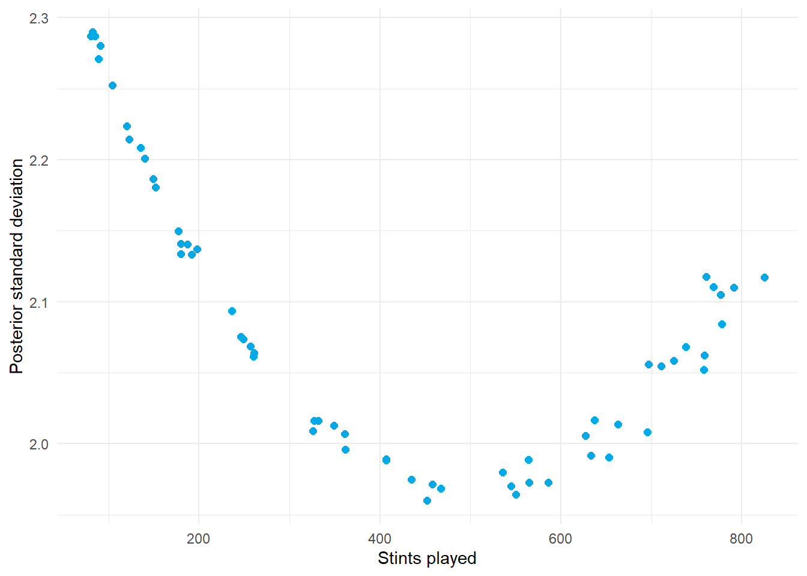

4.6 Regularization as a Prior and Adjusted Plus-Minus
Author
Hua Gong
1 Learning objectives
After this tutorial, you should be able to:
show that the ridge estimator is the posterior mode under a Gaussian prior and relate the penalty to a variance ratio;
construct the stint-level design matrix for adjusted plus-minus;
explain why ordinary least squares fails for plus-minus and how regularization fixes it;
choose the penalty by cross-validation and by marginal likelihood and connect the second to the multilevel model;
report player values with posterior intervals and rank probabilities; and
describe how regularized adjusted plus-minus (RAPM) is used in practice.
2 From a Gaussian prior to a ridge penalty
Consider a linear model with and an independent Gaussian prior on every coefficient, . The log posterior is
Multiplying by shows that maximizing the posterior is the same as minimizing
That is ridge regression. The posterior mode, which for a normal posterior is also the mean, has the closed form
and the posterior covariance is .
Three consequences follow.
The penalty is a prior. A large means a small prior variance: strong belief that coefficients are near zero. A small means a diffuse prior.
Ridge is a multilevel model. The random-effects model of Tutorial 4.2 is exactly this prior. The difference is how is chosen: a multilevel model estimates and by maximum likelihood, whereas ridge regression usually chooses by cross-validation.
Other priors give other penalties. A Laplace (double-exponential) prior gives the lasso’s penalty, whose posterior mode sets some coefficients exactly to zero.
3 Adjusted plus-minus
A basketball player’s raw plus-minus is the team’s scoring margin while they are on the court. It credits a player for their teammates and debits them for their opponents. Adjusted plus-minus removes that confounding with a regression.
The unit of observation is a stint: a stretch of play during which the ten players on the court do not change. For stint , let be the home team’s scoring margin per 100 possessions and define
The model is
where is the number of possessions in the stint divided by 100, so that longer stints are measured more precisely. The coefficient is the player’s contribution to the margin per 100 possessions against average teammates and opponents.
3.1 Why least squares fails
Players who share the court constantly, such as a starting lineup, produce nearly identical columns in . The matrix is then close to singular and the least-squares estimates have enormous variance: two teammates can receive and when the truth is and . Ridge regression stabilizes the estimates by pulling every coefficient toward zero, which is why the standard method is regularized adjusted plus-minus (RAPM).
4 A simulation with known truth
Real stint data do not reveal the true player values, so this tutorial uses a simulation in which they are known. Sixty players are divided into six teams of ten. Each stint draws five players from a home team and five from an away team, with starters playing more often, and the margin is the sum of the home players’ values minus the sum of the away players’ values plus noise.
The noise standard deviation of 25 points per 100 possessions is realistic for the NBA: a single stint is extremely noisy relative to the two-point spread of player values.
Raw plus-minus is contaminated by teammates. Least squares is unbiased but noisy: its root-mean-square error is more than twice that of the best ridge fit. Ridge with the penalty that matches the true variance ratio, , has the lowest error.
Cross-validated weighted squared error against the penalty. The dashed line marks the true variance ratio.
The curve is flat near its minimum because stint-level noise dominates prediction error. Cross-validation identifies the right order of magnitude but not a precise value.
5.2 Marginal likelihood: the multilevel estimate
The multilevel view treats the player values as random effects and estimates and by maximizing the marginal likelihood of the margins after integrating the values out. With and ,
The determinant and inverse of that matrix reduce to computations through the matrix determinant lemma and the Woodbury identity, which is what makes the calculation cheap.
The marginal likelihood recovers both standard deviations and therefore the penalty, without any cross-validation. This is precisely what lmer() does internally; the calculation is written out here only because lme4 does not accept the multi-membership design directly.
6 Posterior intervals and rank probabilities
With in hand, the posterior for the player values is normal with mean and covariance .
The intervals cover the true values at or above the nominal 95% rate, which is the reward for estimating the prior from the data rather than guessing it.
Even with the correct model and 2,500 stints, the top of the ranking is uncertain: several players have a real chance of being in the top five, and reporting that probability is more honest than reporting a single ordering.
ggplot(player_table, aes(stints, sd)) +geom_point(color ="#03a9e6", size =2) +labs(x ="Stints played", y ="Posterior standard deviation") +theme_minimal()

Posterior standard deviation against stints played. Players with less playing time are less certain, and their estimates are shrunk more.
7 RAPM in practice
Production versions of this model differ from the simulation in several ways.
Offense and defense. Each player has two coefficients, one for possessions on offense and one on defense, so the design matrix has two columns per player and the response is points per possession for the offense.
Scale. An NBA season has roughly 30,000 stints and 500 players; several seasons are pooled with a decaying weight on older data. Sparse solvers such as glmnet handle this comfortably.
Informative priors. Instead of shrinking toward zero, the prior mean can be a box-score estimate of the player’s value or the previous season’s RAPM adjusted for aging. The estimate is then , the same formula with a nonzero prior center.
Other sports. Hockey uses the same structure with shifts as stints; soccer versions use player segments between substitutions with expected goals as the response.
Limitations. RAPM measures what happened while a player was on the court relative to replacement lineups. Its precision depends on lineup variety, so players who always play together remain hard to separate, and no penalty can fix that.
8 A reporting checklist for player evaluation
State all of the following when publishing a player rating:
the outcome and the unit of observation;
the covariates that define “expectation” and the prediction moment;
the grouping factors and whether each is nested or crossed;
the prior or penalty, how it was chosen, and the estimated variance components;
the point estimates with credible or bootstrap intervals;
comparisons expressed as probabilities rather than as a bare ranking; and
the limitations of the data, including what the model attributes to the player because it cannot see anything else.
9 Practice
Show that ridge regression with is least squares and that sends every coefficient to zero.
Why does a Gaussian prior centered at zero make sense for plus-minus coefficients but not for a completion-probability intercept?
Two players have played every possession together all season. What does ridge do with their coefficients, and is that correct?
Explain in one sentence why the marginal-likelihood estimate of is the multilevel model’s estimate.
10 Key takeaways
Ridge regression is the posterior mode under a Gaussian prior with .
Adjusted plus-minus needs regularization because shared playing time makes least squares unstable.
The penalty can be chosen by cross-validation or by marginal likelihood; the second is the multilevel estimate.
Posterior intervals and rank probabilities communicate the uncertainty that a ranking hides.